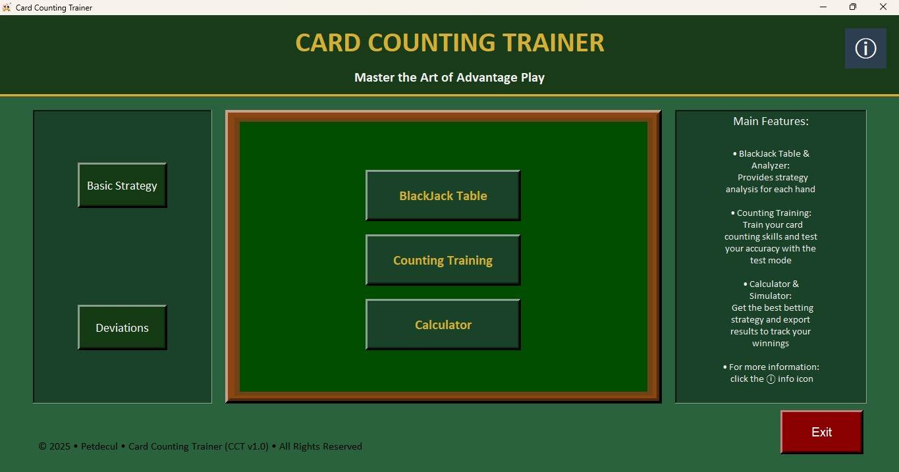
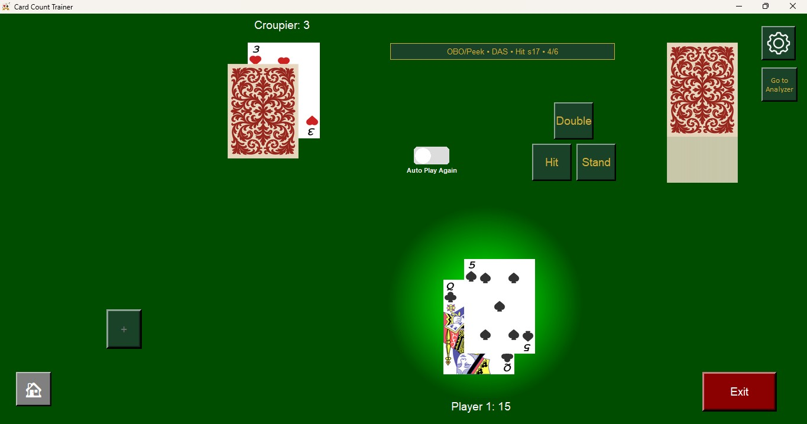
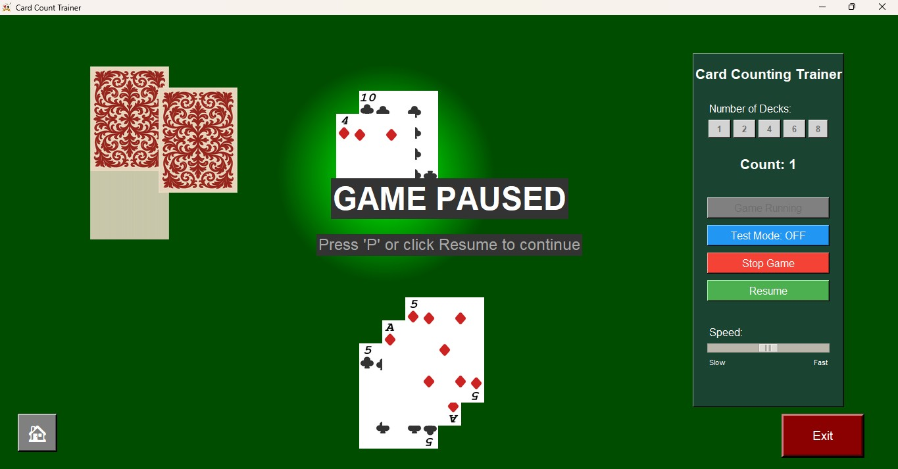
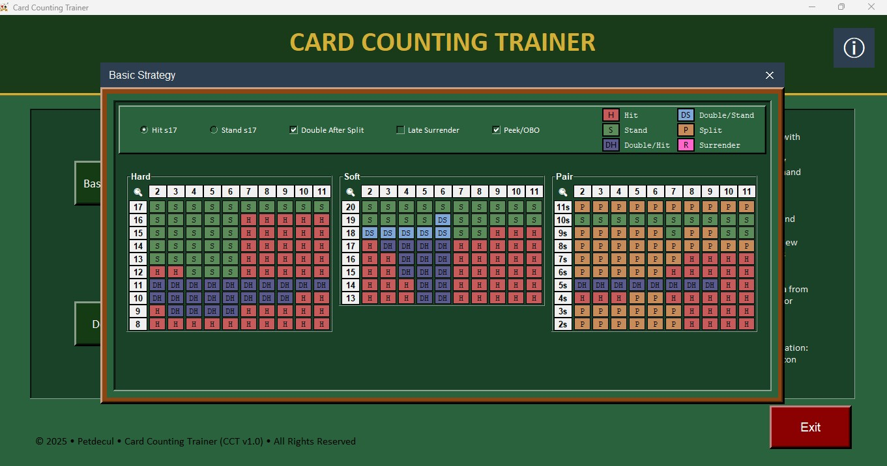
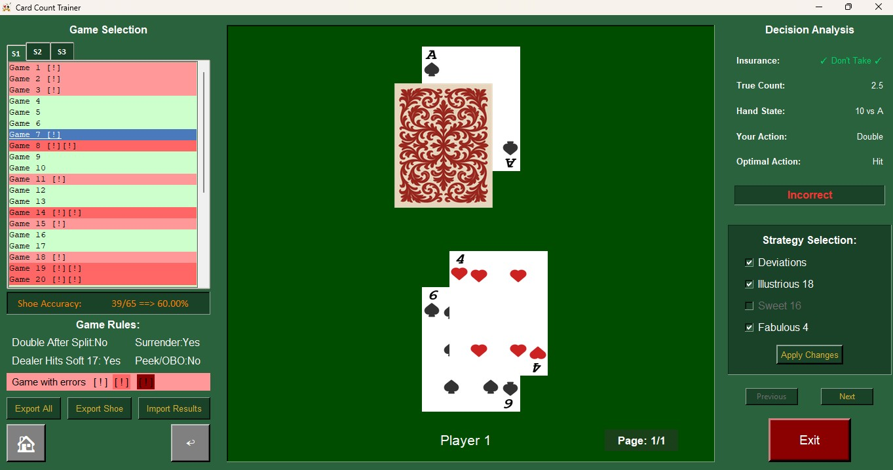
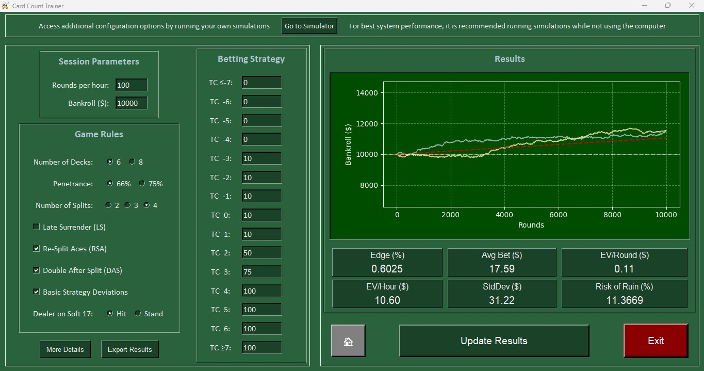
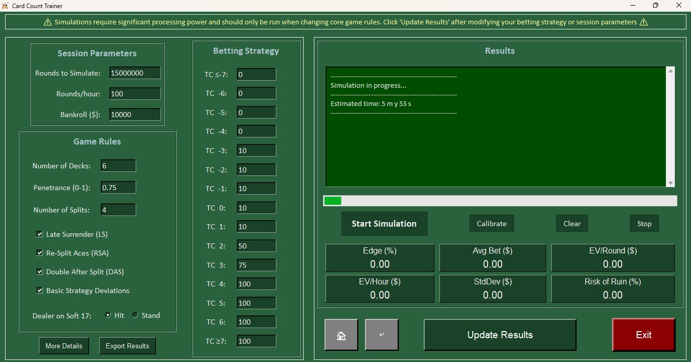

A complete training suite for card counting that started as a personal challenge. It is a mix of mathematical curiosity, a programming exercise, and a genuine fascination with card games.
Why I built it
Card counting is not some magic trick. It is pure applied statistics. I was fascinated by the idea that you can get a real edge over the house just by tracking the deck composition. When I saw that professional courses were charging around 400 euros to teach this, I decided to save the money and build my own tool instead. That choice turned into a much bigger project than I initially planned.
CCT became my first serious dive into programming. I used it to properly learn Python while exploring concepts like probability, expected value, and the Kelly criterion. What started as a simple idea grew into a full training environment rather than just a basic app.
What is inside

The app is split into four main modules. The Blackjack Table lets you play against a simulated dealer with fully customizable rules. You can adjust the number of decks, penetration, surrender options, and more. Every move you make is logged so you can analyze your play later.
The Counting Trainer runs through a shoe at whatever speed you find comfortable while tracking the running count. There is also a test mode that hides the count to see if you can keep up without help.

Blackjack table with full rule configuration

Counting trainer with speed control and test mode
The Analyzer reviews every hand from your session to show you the optimal mathematical decision. It highlights any deviations from basic strategy so you know exactly where you are losing money.
The Basic Strategy table is interactive and updates automatically based on the rules you have set. It covers everything from hard and soft hands to complex pair splitting.

Interactive basic strategy table

Session analyzer with per-hand decision review
Calculator and Simulation
The Calculator determines your expected value and risk of ruin based on your betting strategy. These are not just guesses. The results come from a database of 10 million simulated hands per rule combination that I ran before releasing the app. It tells you exactly how much bankroll you need to survive the natural variance of the game.
The Simulator lets you run custom simulations from scratch. Instead of using shortcuts, the engine deals and resolves every single hand individually. I chose this approach because I wanted to build the game logic myself rather than relying on basic approximations. It is perfect for testing weird rule combinations that are not in the main database.

Calculator based on 10 million fully simulated hands per rule combination

Simulator for custom game rule combinations
Building CCT was the project that really got me into software development. It was the spark that eventually led me toward electronics and hardware too.